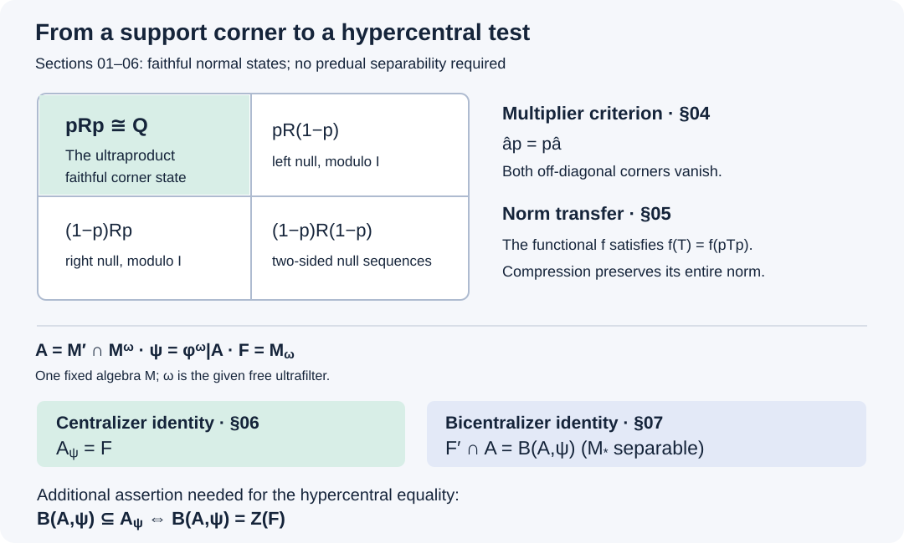

Ultraproduct corners and hypercentral tests
Original exposition by OpenAI Codex, GPT-6 Astra, Ultra. New text and figure: CC0-1.0.
A norm of a normal functional is tested against an entire operator unit ball. In an ultrapower, only the sequences that preserve the null ideal represent operators. We prove that this restriction loses none of the norm of a functional obtained by multiplying the ultrapower state on either side. The proof identifies the ultrapower with a support corner, including the two off-diagonal corners that explain why arbitrary bounded sequences cannot be used as representatives.
For a fixed algebra, the norm identity identifies its asymptotic centralizer with the centralizer of the canonical state on its central-sequence algebra. A diagonal argument then gives an exact bicentralizer description of the weaker-input hypercentral test. These are statements for general algebras; no finite, amenable or factor hypothesis is imposed. The final equality with the center of the asymptotic centralizer is a further assertion, isolated in Section 07.
We use the faithful-state GNS construction, Constructing the GNS von Neumann algebra, the operator bicommutant theorem, Finite-vector approximation and the bicommutant, and Kaplansky's density theorem, Theorem 7.1. The normal-predual duality and Hahn–Banach argument are in Concrete preduals, The concrete predual and its intrinsic norm. Faithful-state seminorms and normal-functional module operations are proved in Central-sequence foundations, NT1–NT2. We use both directions of Conditional expectations from modular invariance, The criterion and its exact setting–The converse reduces the closed Tomita map, and the precise hypercentral conventions of Null sequences and hypercentral commutants, Null sequences and the two commutation tests–The null-sequence test forces the multiplier condition.
Sequences, states and the ambient Hilbert space
Let \((M_n,\varphi_n)\) be a sequence of von Neumann algebras with faithful normal states, and let \(\omega\) be a free ultrafilter on \(\mathbb N\). Put
\[ \begin{aligned} \mathscr B&=\{(x_n):x_n\in M_n,\ \sup_n\|x_n\|<\infty\},\\ L&=\{x\in\mathscr B:\lim_\omega\varphi_n(x_n^*x_n)=0\},\\ I&=L\cap L^*,\\ \mathscr N&=\{x\in\mathscr B:xI\subseteq I,\ Ix\subseteq I\},\qquad Q=\mathscr N/I. \end{aligned} \tag{HUC.1} \]Here \(L^*=\{x^*:x\in L\}\). Coordinate operations and the supremum norm make \(\mathscr B\) a unital C* algebra. Throughout, the bimodule convention is
\[ (x\varphi)(a)=\varphi(ax),\qquad (\varphi y)(a)=\varphi(ya). \tag{HUC.2} \]Let \((H_n,\xi_n)\) be the faithful GNS representation of \((M_n,\varphi_n)\). The Hilbert ultraproduct \(H_\omega\) consists of bounded vector sequences modulo those with norm tending to zero along \(\omega\), with
\[ \langle[\eta_n],[\zeta_n]\rangle =\lim_\omega\langle\eta_n,\zeta_n\rangle. \]The quotient is complete. To see this directly, pass from a Cauchy sequence to a subsequence whose consecutive quotient distances are less than \(2^{-k-2}\). Representatives may be chosen with a common bound: a quotient vector of norm at most \(C\) can be clipped coordinatewise to the ball of radius \(C+1\) without changing its class. On a decreasing sequence of large sets impose the first \(k\) consecutive-distance bounds, each with bound \(2^{-j}\), and also \(n\geq k\). Choosing the \(k\)-th row on the difference of consecutive large sets gives a bounded vector sequence. The tail estimate \(\sum_{j\geq k}2^{-j}\) proves convergence to its class. The original Cauchy sequence has the same limit.
For \(x\in\mathscr B\), define
\[ \begin{aligned} \widehat x[\eta_n]&=[x_n\eta_n],\qquad R=\{\widehat x:x\in\mathscr B\}'',\\ \xi&=[\xi_n],\qquad \Phi(T)=\langle T\xi,\xi\rangle. \end{aligned} \tag{HUC.3} \]This is a star representation. Its norm is
\[ \|\widehat x\|=\lim_\omega\|x_n\|. \tag{HUC.4} \]The upper bound follows by applying the coordinate norm bound on any large set. For the lower bound choose a unit vector \(\eta_n\) with \(\|x_n\eta_n\|>\|x_n\|-1/n\), and use its class. Thus the represented algebra is the norm ultraproduct, a C* algebra, and its strong closure is the von Neumann algebra \(R\). The functional \(\Phi\) is a normal state on \(R\).
Let \(p\) be the projection onto \(\overline{R'\xi}\). This subspace reduces \(R'\), so \(p\in R\), and \(p\xi=\xi\). Consequently
\[ \Phi(T)=\Phi(pTp)\qquad(T\in R). \tag{HUC.5} \]The restriction of \(\Phi\) to \(pRp\) is faithful. Indeed, if \(T\in pRp\) is positive and \(\Phi(T)=0\), then \(T^{1/2}\xi=0\). Commutation with \(R'\) gives \(T^{1/2}R'\xi=0\), hence \(T^{1/2}p=0\) and \(T=0\). This also explains the term support projection for \(p\).
The left null ideal and its two-sided normalizer
Lemma. The space \(L\) is a closed left ideal, \(I\) is a closed star subalgebra, and \(\mathscr N\) is a unital C* algebra in which \(I\) is a closed two-sided ideal. Moreover,
\[ L\mathscr N\subseteq L,\qquad \mathscr N L^*\subseteq L^*,\qquad \mathscr N\cap(L+L^*)=I. \tag{HUC.6} \]Proof. Left multiplication preserves \(L\) because \(\varphi_n(x_n^*a_n^*a_nx_n)\leq\|a\|^2\varphi_n(x_n^*x_n)\). The seminorm \(x\mapsto\lim_\omega\varphi_n(x_n^*x_n)^{1/2}\) is norm continuous, proving closedness. Taking adjoints gives the corresponding right-ideal facts for \(L^*\). These facts prove that \(I=L\cap L^*\) is a star algebra. The two ideal-preservation conditions defining \(\mathscr N\) are closed under sums, products, adjoints and norm limits, and contain the unit and \(I\).
For every \(a\in L\), one has \(a^*a\in I\): it belongs to \(L\) by the left-ideal property and is selfadjoint. If \(b\in\mathscr N\), then \(b^*a^*ab\in I\), so its coordinate state limit is zero. This says \(ab\in L\), proving the first inclusion in (HUC.6). Adjointing proves the second.
If \(a\in\mathscr N\cap L\), then \(a^*a\in I\), and \((aa^*)^2=a(a^*a)a^*\in I\). Continuous positive functional calculus inside the closed C* subalgebra \(I\) gives \(aa^*\in I\). Thus \(a\in L^*\), and
\[ \mathscr N\cap L=\mathscr N\cap L^*=I. \tag{HUC.7} \]Finally write \(a=b+c\in\mathscr N\), with \(b\in L\), \(c\in L^*\). For \(d\in I\), the product \(bd\) belongs to \(L\), and \(bd=ad-cd\) also belongs to \(L^*\). The product \(db\) belongs to both ideals directly. Hence \(b\in\mathscr N\), and then \(c=a-b\in\mathscr N\). Equation (HUC.7) puts both in \(I\). This proves the last equality in (HUC.6). \(\square\)
Every sequence in \(I\) has zero limit under the states, by Cauchy–Schwarz. This observation was used above when passing from membership of a positive sequence in \(I\) to the vanishing of its state values.
A contraction can be lifted on two vectors at once
Lemma. For every contraction \(T\in R\), there is a sequence of contractions \(a_n\in M_n\) such that
\[ \widehat a\xi=T\xi,\qquad \widehat a^{\,*}\xi=T^*\xi. \tag{HUC.8} \]Consequently \(\widehat a p=Tp\) and \(p\widehat a=pT\).
Proof. Consider the pairs
\[ \mathcal E=\{(\widehat a\xi,\widehat a^{\,*}\xi):\|a_n\|\leq1\text{ for every }n\} \subset H_\omega\oplus H_\omega. \]We first prove that this set is closed. If \((\eta,\zeta)\) belongs to its closure, choose contraction rows \(a^{(k)}\) for which each of the two vector errors is less than \(2^{-k-3}\). The two consecutive-row distances in the ultraproduct are then strictly less than \(2^{-k-1}\). Thus the sets
\[ B_k=\{n:\|(a_n^{(k+1)}-a_n^{(k)})\xi_n\|<2^{-k},\ \|((a_n^{(k+1)})^*-(a_n^{(k)})^*)\xi_n\|<2^{-k}\} \]belong to \(\omega\). Set
\[ G_k=\{n:n\geq k\}\cap\bigcap_{j\leq k}B_j. \]They decrease, are large, and have empty intersection. Use \(a_n=a_n^{(k)}\) on \(G_k\setminus G_{k+1}\), and use the first row outside \(G_1\). If \(n\in G_k\), telescoping from row \(k\) to the selected row gives, for both the vector and its adjoint vector, an error at most \(\sum_{j\geq k}2^{-j}=2^{-k+1}\). Taking ultralimits and then \(k\to\infty\) proves that the resulting pair equals \((\eta,\zeta)\). The same selected row works for both components. Therefore \(\mathcal E\) is closed.
By the strong* form of Kaplansky density, \((T\xi,T^*\xi)\) is in the closure of \(\mathcal E\). Here a contraction in the represented norm ultraproduct has contraction representatives: clip a representative's coordinate norms to one; the change has norm ultralimit zero by (HUC.4). Closedness now gives (HUC.8).
For \(S\in R'\), the first identity implies \(\widehat a S\xi=S\widehat a\xi=ST\xi=TS\xi\). Density in \(pH_\omega\) gives \(\widehat a p=Tp\). Apply the same reasoning to the adjoint identity and take adjoints to get \(p\widehat a=pT\). \(\square\)
The support corner is exactly the ultraproduct
Theorem. For \(a\in\mathscr B\),
\[ a\in\mathscr N\quad\Longleftrightarrow\quad \widehat a p=p\widehat a. \tag{HUC.9} \]The map
\[ \Theta:Q\longrightarrow pRp,\qquad \Theta(a+I)=p\widehat a p \tag{HUC.10} \]is a star isomorphism. In particular \(Q\) is a von Neumann algebra with faithful normal state
\[ \varphi^\omega(a+I)=\lim_\omega\varphi_n(a_n). \tag{HUC.11} \]Every contraction in \(Q\) has a representative consisting of contractions in \(\mathscr N\).
Proof. The definition of \(p\) gives
\[ \begin{aligned} a\in L&\Longleftrightarrow\widehat a p=0,\\ a\in L^*&\Longleftrightarrow p\widehat a=0,\\ a\in I&\Longleftrightarrow\widehat a\in(1-p)R(1-p). \end{aligned} \tag{HUC.12} \]For example, \(a\in L\) means \(\widehat a\xi=0\); commuting with \(R'\) extends this vanishing to \(pH_\omega\). The other statements follow by adjoints and intersection.
If \(\widehat a\) commutes with \(p\), multiplication on either side preserves the bottom-right corner in (HUC.12), so \(a\in\mathscr N\).
Conversely, take \(a\in\mathscr N\). Apply Section 03, with scaling if necessary, separately to the three operators
\[ p\widehat a p,\qquad p\widehat a(1-p),\qquad (1-p)\widehat a p. \]It gives sequences \(b,c,d\) whose corners touching \(p\) equal, respectively, those three operators. Thus \(\widehat b\) commutes with \(p\), \(\widehat c p=0\), \(p\widehat d=0\), and \(a-b-c-d\in I\). We already know \(b\in\mathscr N\); (HUC.12) puts \(c\in L\), \(d\in L^*\). Therefore \(a-b\in\mathscr N\cap(L+L^*)=I\) by Section 02. It follows that the two off-diagonal corners of \(\widehat a\) vanish. This proves (HUC.9).
The corner map has kernel exactly \(I\) on \(\mathscr N\), by (HUC.9) and (HUC.12). It preserves products and adjoints because each representative commutes with \(p\). Section 03, applied to \(T\in pRp\), proves surjectivity and supplies contraction representatives when \(\|T\|\leq1\). This proves the isomorphism. Transporting the faithful normal corner state proves (HUC.11). \(\square\)

Figure. The top-left corner is the ultraproduct. The left null ideal has zero first column; its adjoint has zero first row. The two-sided null ideal occupies only the bottom-right corner. Sections 06–07 identify the two algebras in the lower diagram; the additional center equality is stated separately there.
Exact transfer of functional norms
Theorem. If \(x,y\in\mathscr N\), and \(X=x+I\), \(Y=y+I\), then
\[ \|X\varphi^\omega-\varphi^\omega Y\| =\lim_\omega\|x_n\varphi_n-\varphi_n y_n\|. \tag{HUC.13} \]In particular,
\[ X\in Q_{\varphi^\omega} \quad\Longleftrightarrow\quad \lim_\omega\|x_n\varphi_n-\varphi_n x_n\|=0. \tag{HUC.14} \]Proof. On \(R\), consider the normal functional
\[ f(T)=\Phi(T\widehat x-\widehat yT). \]On a represented sequence it has value
\[ f(\widehat a)=\lim_\omega (x_n\varphi_n-\varphi_n y_n)(a_n). \tag{HUC.15} \]Write the right side of (HUC.13) as \(c\). For contraction sequences, (HUC.15) has absolute value at most \(c\). Kaplansky density and normality extend this bound to the whole unit ball of \(R\). Conversely, choose contractions \(a_n\) and multiply each by a scalar of modulus one so that
\[ (x_n\varphi_n-\varphi_n y_n)(a_n) \geq \|x_n\varphi_n-\varphi_n y_n\|-1/n \]is real. Formula (HUC.15) gives \(\|f\|\geq c\). Therefore \(\|f\|=c\).
Since \(\widehat x\) and \(\widehat y\) commute with \(p\), (HUC.5) gives \(f(T)=f(pTp)\). Compression is contractive and is the identity on \(pRp\), so the norm of \(f\) equals the norm of its restriction to that corner. Through \(\Theta\), the restriction is exactly \(X\varphi^\omega-\varphi^\omega Y\). This proves (HUC.13), and setting \(Y=X\) proves (HUC.14). \(\square\)
No assertion that arbitrary bounded test sequences are multipliers occurs here. They measure the norm in \(R\); the support compression then identifies that norm with the norm in \(Q\).
The canonical state and its centralizer
Now fix one von Neumann algebra \(M\) with faithful normal state \(\varphi\), and take \(M_n=M\), \(\varphi_n=\varphi\). Write \(Q=M^\omega\), and identify \(M\) with its constant sequences. This is legitimate because fixed multiplication preserves bounded strong*-null sequences. The constant embedding is injective, unital and state preserving. It is normal: for a bounded increasing positive net \(a_i\uparrow a\) in \(M\), its image has supremum \(b\leq a\) in \(Q\), and normality of both states gives \(\varphi^\omega(b)=\sup_i\varphi(a_i)=\varphi(a)\). Faithfulness gives \(b=a\).
Theorem. There is a faithful normal conditional expectation
\[ E_M:Q\longrightarrow M,\qquad E_M(x+I)=\mathop{\mathrm{uw}\!\lim}_{\omega}x_n, \qquad \varphi E_M=\varphi^\omega. \tag{HUC.16} \]Put
\[ A=M'\cap Q,\qquad \psi=\varphi^\omega|_A, \qquad F=M_\omega=C_\omega/I. \]Then \(A\) is invariant under the modular group of \(\varphi^\omega\), and
\[ A_\psi=F. \tag{HUC.17} \]If two faithful normal states of \(M\) agree on \(Z(M)\), their induced states on \(A\) agree. In particular \(\psi\) is independent of the state when \(M\) is a factor.
Proof. A bounded sequence has a unique ultraweak ultralimit: for each \(\eta\in M_*\), assign \(\lim_\omega\eta(x_n)\); this is a bounded linear functional on \(M_*\), hence an element of \(M\). Strong*-null bounded sequences have ultraweak limit zero. The assignment is therefore well defined on \(Q\). Positivity follows by positive lifting through the C* quotient: lift the positive square root and take its square. The map is unital, fixes \(M\), and is \(M\)-bimodular because left and right multiplication by fixed elements are ultraweakly continuous. Thus it is a conditional expectation, and the state identity in (HUC.16) follows directly.
For a bounded increasing positive net \(X_i\uparrow X\) in \(Q\), let \(b=\sup_i E_M(X_i)\leq E_M(X)\). Then
\[ \varphi(b)=\sup_i\varphi^\omega(X_i)=\varphi^\omega(X)=\varphi(E_M(X)). \]Faithfulness of \(\varphi\) proves equality, hence normality. If \(X\geq0\) and \(E_M(X)=0\), faithfulness of \(\varphi^\omega\) gives \(X=0\).
The converse direction of the modular expectation theorem now implies that the constant copy of \(M\) is invariant under \(\sigma^{\varphi^\omega}\). Automorphisms preserving \(M\) preserve its relative commutant, so \(A\) is invariant too. The forward direction supplies a \(\varphi^\omega\)-preserving faithful normal expectation \(E_A:Q\to A\). Bimodularity gives, for \(X\in A\),
\[ X\varphi^\omega-\varphi^\omega X =(X\psi-\psi X)\circ E_A. \tag{HUC.18} \]Restriction to \(A\) gives the reverse norm inequality, so these two functionals have equal norms.
Take \(X=x+I\in A_\psi\). Equations (HUC.13) and (HUC.18) give \(\|x_n\varphi-\varphi x_n\|\to_\omega0\). Membership in \(A\) also gives \([x_n,b]\to_\omega0\) strong* for every fixed \(b\in M\). For \(\varphi_b(a)=\varphi(ba)\), direct expansion and Cauchy–Schwarz give
\[ \|x_n\varphi_b-\varphi_bx_n\| \leq \|b\|\,\|x_n\varphi-\varphi x_n\| +\varphi([x_n,b][x_n,b]^*)^{1/2}. \tag{HUC.19} \]Indeed, evaluated at \(a\), the difference is \((x_n\varphi-\varphi x_n)(ba)+\varphi([x_n,b]a)\). The range \(\{\varphi_b:b\in M\}\) is norm dense in \(M_*\): an annihilator \(z\in M\) satisfies \(\varphi(bz)=0\) for every \(b\), and choosing \(b=z^*\) gives \(z=0\); Hahn–Banach then proves density. Uniform boundedness of \(x_n\) extends (HUC.19) to every normal functional. Thus \(x\in C_\omega\), so \(X\in F\).
Conversely, NHC-01 proves that a predual-centralizing sequence is a multiplier and commutes with all constant operators modulo \(I\). Equation (HUC.14) then puts its class in \(A_\psi\). This proves (HUC.17).
Finally, bimodularity gives \(E_M(A)\subseteq Z(M)\). Applying the state identity in (HUC.16) proves the assertion about two states. \(\square\)
Hypercentral tests are a bicentralizer
Assume from now on that \(M_*\) is separable. The algebras \(A\) and \(F\) need not have separable predual. For \(a\in A\), put
\[ \|a\|_\psi^\#= \bigl(\psi(a^*a)+\psi(aa^*)\bigr)^{1/2}. \]Define the bicentralizer using ordinary sequences in \(A\):
\[ \begin{aligned} \mathrm B(A,\psi)=\{X\in A:\ &\|[X,Y_k]\|_\psi^\#\longrightarrow0\\ &\text{whenever }\sup_k\|Y_k\|<\infty,\ \|Y_k\psi-\psi Y_k\|\longrightarrow0\}. \end{aligned} \tag{HUC.20} \]Using a faithful-state symmetric seminorm is equivalent to testing bounded strong* convergence, by NT2.
Theorem. With the notation of Section 06,
\[ F'\cap A=\mathrm B(A,\psi). \tag{HUC.21} \]Consequently the two hypercentral input conventions of NHC-02 agree exactly when
\[ \mathrm B(A,\psi)\subseteq A_\psi; \quad\text{equivalently,}\quad \mathrm B(A,\psi)=Z(F). \tag{HUC.22} \]Proof. Constant sequences \(Y_k=Y\in A_\psi=F\) show immediately that \(\mathrm B(A,\psi)\subseteq F'\cap A\).
For the reverse inclusion, fix \(X\in F'\cap A\), with a bounded multiplier representative \(x_n\). Suppose (HUC.20) fails. After scaling and passing to a subsequence, there are contractions \(Y_k\in A\), a number \(\delta>0\), and arbitrarily small state-commutator norms such that
\[ \|[X,Y_k]\|_\psi^\#>\delta. \tag{HUC.23} \]By the density proved after (HUC.19) and separability of \(M_*\), choose \(b_j\in M\) so that the functionals \(\varphi_{b_j}\) are norm dense in \(M_*\). More explicitly, approximate a countable dense subset of \(M_*\) by elements of that range to every positive rational accuracy, and enumerate the resulting countable family. Set
\[ K_k=1+\max_{j\leq k}\|b_j\|. \]Choose the subsequence in (HUC.23) so that also \(\|Y_k\psi-\psi Y_k\|<2^{-k-2}/K_k\).
Lift each \(Y_k\) to a row of contractions \(y_n^{(k)}\in\mathscr N\), using Section 04. Equations (HUC.13) and (HUC.18) give
\[ \lim_\omega\|y_n^{(k)}\varphi-\varphi y_n^{(k)}\| <2^{-k-2}/K_k. \]Since \(Y_k\in A\), the fixed-operator commutator term in (HUC.19) tends to zero for each \(b_j\). Therefore, for every \(j\leq k\),
\[ \lim_\omega\|y_n^{(k)}\varphi_{b_j}-\varphi_{b_j}y_n^{(k)}\| <2^{-k-2}. \tag{HUC.24} \]At the same time, the quotient state formula and (HUC.23) imply
\[ \lim_\omega\|[x_n,y_n^{(k)}]\|_\varphi^\#>\delta. \tag{HUC.25} \]Here \(\|\cdot\|_\varphi^\#\) uses the same unnormalized sum of two squares as \(\|\cdot\|_\psi^\#\).
For each \(k\), choose a large set \(B_k\) on which all the first \(k\) norms in (HUC.24) are less than \(2^{-k}\), and the norm in (HUC.25) exceeds \(\delta/2\). Define
\[ G_k=\{n:n\geq k\}\cap\bigcap_{r\leq k}B_r. \]For \(n\in G_k\setminus G_{k+1}\), put \(z_n=y_n^{(k)}\), and put \(z_n=0\) outside \(G_1\). The selected row number tends to infinity along \(\omega\). Thus, for each fixed \(j\), \(\|z_n\varphi_{b_j}-\varphi_{b_j}z_n\|\to_\omega0\). Norm density and the bound \(\|z_n\|\leq1\) extend this to all of \(M_*\). Hence \(z\in C_\omega\), and its quotient \(Z\) lies in \(F\).
But on \(G_1\) the coordinate commutator with the original \(x_n\) has symmetric seminorm greater than \(\delta/2\). Its quotient commutator therefore has positive seminorm, contradicting \(X\in F'\). This proves (HUC.21). The original coordinate \(x_n\) was kept throughout the construction; only the row of its partner was selected.
Finally \(Z(F)\subseteq F'\cap A\), and intersecting \(F'\cap A\) with \(A_\psi=F\) gives exactly \(Z(F)\). Combine this fact with (HUC.21) and the quotient identities of NHC-02 to obtain (HUC.22). \(\square\)
Thus a general proof of the inclusion in (HUC.22) would settle the hypercentral identity. Neither (HUC.17) nor (HUC.21) alone asserts that inclusion.
Examples and exercises with solutions
1. A one-sided null sequence need not represent an operator. On \(M=B(\ell^2(\mathbb N))\), take \(\varphi(a)=\sum_{j\geq1}2^{-j}\langle ae_j,e_j\rangle\) and \(a_n=e_{1n}\). Determine its null-ideal and multiplier memberships.
Solution. We have \(a_n^*a_n=e_{nn}\) and \(a_na_n^*=e_{11}\). Thus \(\varphi(a_n^*a_n)=2^{-n}\to0\), whereas \(\varphi(a_na_n^*)=1/2\). The sequence lies in \(L\setminus I\). Equation (HUC.7) shows that it cannot lie in \(\mathscr N\). In the support picture, \(\widehat a p=0\) but \(p\widehat a\ne0\), since its adjoint does not annihilate \(\xi\).
2. Check the norm and distinguish the two centralizers in a matrix algebra. Let \(M=M_2(\mathbb C)\), \(\varphi(a)=\operatorname{Tr}(\rho a)\), and \(\rho=\operatorname{diag}(s,t)\), where \(s,t>0\), \(s+t=1\), \(s\ne t\). Compute the state commutator norm of \(e_{12}\), and determine \(Q_{\varphi^\omega}\) and \(F\).
Solution. The module convention gives \((e_{12}\varphi-\varphi e_{12})(a)=(t-s)a_{21}\), so its norm is \(|s-t|\); \(|a_{21}|\leq\|a\|\) and equality is attained at \(a=e_{21}\). Every bounded matrix sequence has a norm ultralimit by finite-dimensional compactness. Thus \(Q=M_2(\mathbb C)\), and (HUC.13) reproduces this norm for the constant sequence. The centralizer of \(\varphi\) is the diagonal algebra: \(\varphi(ay)=\varphi(ya)\) for every \(a\) is equivalent, by the nondegenerate matrix trace pairing, to \(y\rho=\rho y\). On the other hand \(A=M'\cap Q=\mathbb C1\), so (HUC.17) gives \(F=\mathbb C1\). The centralizer must be taken inside \(A\) to obtain \(F\).
3. Recover the finite tracial identity. Suppose \(M\) has a faithful normal tracial state \(\tau\). Prove (HUC.22).
Solution. For every bounded sequence \(x_n\), \(x_n\tau-\tau x_n=0\). Formula (HUC.13) says that the faithful normal state \(\tau^\omega\) is a trace on \(Q\). Its restriction \(\psi\) is therefore a trace on \(A\), and (HUC.17) gives \(F=A\). Every constant element of \(A\) is a permissible test in (HUC.20), so \(\mathrm B(A,\psi)\subseteq Z(A)\). Every central element commutes with every test term, giving the reverse inclusion. Hence \(\mathrm B(A,\psi)=Z(A)=Z(F)\). This argument for the tracial case does not need predual separability.
4. Locate the countability assumption. Which step above uses separability of \(M_*\), and is separability of \(A_*\) required?
Solution. Sections 01–06 use a sequence of faithful normal states and a free ultrafilter, but no separability of any predual. In Section 07, the countable dense family \(\varphi_{b_j}\) allows the selected row at coordinate \(n\) to pass successively all normal-functional tests on \(M\). Density then gives centralizing for every normal functional. The outer sequence \(Y_k\) comes from the definition of the bicentralizer and requires no dense family in \(A_*\). Thus separability is imposed on \(M_*\) alone.
The freely accessible primary comparison is Hiroshi Ando and Uffe Haagerup, Ultraproducts of von Neumann algebras, Sections 3.2–3.3 (especially Lemma 3.13 and Proposition 3.15), Proposition 4.29, Proposition 4.35 and Lemma 4.36. Sections 01–06 supply these corner, norm-transfer and canonical-state arguments in the notation used here. Section 07 supplies the explicit diagonal reduction for the hypercentral question, with the moving coordinate retained.